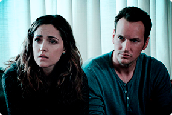

Успешный банкир Энди Дюфрейн
обвинен в убийстве собственной
жены и ее любовника. Оказавшись в
тюрьме под названием Шоушенк, он
сталкивается с жестокостью и
беззаконием, царящими по обе
стороны решетки. Каждый, кто
попадает в эти стены, становится их
рабом до конца жизни. Но Энди,
вооруженный живым умом и доброй
душой, отказывается мириться с
приговором судьбы и начинает
разрабатывать невероятно дерзкий
план своего освобождения.

Клай Бересфорд вынужден лечь под
нож. Однако в процессе операции на
сердце он неожиданно приходит в
себя. Находясь в парализованном
состоянии, будучи не в силах
пошевелить ни рукой, ни ногой, он,
тем не менее, чувствует каждое
касание скальпеля к своей плоти…

Джош и Рене переезжают со своими
детьми в новый дом, но не успевают
толком распаковать вещи, как
начинаются странные события.
Необъяснимо перемещаются
предметы, в детской звучат странные
звуки… Но в настоящий ужас
приходят родители, когда их
десятилетний сын Далтон впадает в
кому. Все усилия врачей в больнице
помочь мальчику безуспешны.

Доктор Райан Стоун, блестящий
специалист в области медицинского
инжиниринга, отправляется в свою
первую космическую миссию под
командованием ветерана
астронавтики Мэтта Ковальски, для
которого этот полет — последний
перед отставкой. Но во время,
казалось бы, рутинной работы за
бортом случается катастрофа.
Шаттл уничтожен, а Стоун и
Ковальски остаются совершенно
одни; они находятся в связке друг с
другом, и все, что они могут, — это
двигаться по орбите в абсолютно
черном пространстве без всякой
связи с Землей и какой-либо
надежды на спасение.
Чем же питомцы занимаются в
свободное время, когда их хозяева
уходят на работу? Оставшись одни,
домашние животные понимают, что
ничто человеческое им не чуждо:
ходят в гости, совершают набеги на
холодильник, слушают музыку и
весело проводят время. Но однажды
хозяйка главного героя приводит в
дом ещё одну собаку. И тогда
привычный образ жизни в
мгновение ока переворачивается с
ног на голову!
Серия американских фильмов в
жанре экшн. В центре сюжета
фильмов - незаконные гонки,
разборки уличных банд, кражи с
использованием транспортных
средств. Каждый фильм - уникальная
история "семьи" гонщиков, которые
разворачивают и осуществляют
невероятные стратегические планы
по решению возникших на их пути
трудностей!
Мальчик Эван перенял от своего
отца-психопата, ныне запертого в
доме для умалишённых, странную
болезнь — он не помнит некоторых
эпизодов своей жизни, причем в эти
моменты происходили довольно
странные, а то и ужасные события.
Возмужав и поступив в колледж,
Эван делает удивительное открытие.
Читая дневники, которые он писал в
детстве по совету врача, Эван может
возвращаться в детство и своими
действиями менять будущее.
Они мечтали устроить незабываемый
мальчишник в Вегасе. Но теперь им
необходимо вспомнить, что именно
произошло: что за ребенок сидит в
шкафу номера отеля? Как в ванную
попал тигр? Почему у одного из них
нет зуба? И, самое главное, куда
делся жених? То, что парни
вытворяли на вечеринке, не идет ни в
какое сравнение с тем, что им
придется сделать на трезвую голову,
когда они будут шаг за шагом
восстанавливать события прошлой
ночи.
Клэр и Марк уезжают на все
выходные со спокойной душой, ведь
они оставили своего малолетнего
отпрыска Реми на попечении
правильного парня и симпатяги
Фрэнка. На следующий день супругов
будит звонок из полиции,
сообщающий, что их дом перевёрнут
вверх дном, а сын исчез! На месте
происшествия осталась лишь
видеокамера, запечатлевшая на
удивление бурные события
минувшей ночи.
История двух молодых людей,
которые принадлежат к разным
мирам. Баби ― богатая девушка,
которая отображает доброту и
невинность. Аче — мятежный
мальчик, импульсивный,
бессознательный, склонный к риску
и опасности. Это маловероятно,
практически невозможно, но их
встреча неизбежна, и в этом
неистовом путешествии между ними
возникает первая большая любовь.